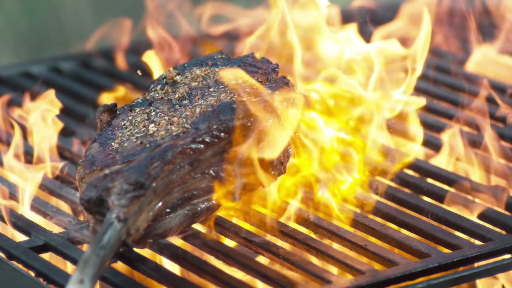
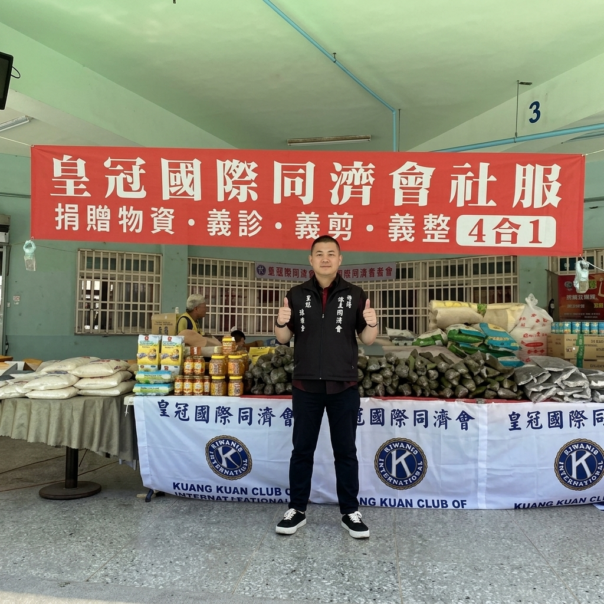

鮮來主廚傳授：紐西蘭小羔羊排 4 分鐘香煎粉嫩封汁術
完全無羶氣、清甜天然奶香與高溫梅納酥殼的黃金法則
許多人對羊肉停留在濃重羶氣的刻板印象，但「鮮來肉品」嚴選的紐西蘭草飼小羔羊，在清澈空氣與純淨牧草培育下，肉質細嫩且帶有甘甜奶香。黃健瑀主廚親自示範：只需一把鑄鐵鍋與 4 分鐘，在家就能煎出米其林星級的粉紅斷面。
「羊羶味的根源來自成年綿羊脂肪的揮發性脂肪酸。鮮來只挑 6 個月以下草飼小羔羊，脂肪極為純淨，只需少許片鹽與新鮮迷迭香，便能喚醒大自然的清甜。」
為鮮來肉品量身打造之「自媒體專區」與「品牌老饕文案專區」提案展示。
不只解決消費者「買了頂級羊肉不會煎、怕羶味」的顧慮，更能直接以【一鍵帶走食材包】無縫導流至 Railway 銷售結帳系統！
消費者在官網選購肉品時，最常問「羊排怎麼煎才不會柴？」、「羊肉爐怎麼燉才沒有羶味？」。
以清楚的時間、溫度、步驟指引，搭配「使用此食材立即訂購」按鈕，化被動流覽為主動購買！
現代自媒體講究「視覺衝擊」與「療癒聲音」。直火炭烤滋滋聲、順紋45°刀工切下、主廚掌杓慢熬，點擊卡片即可彈窗沈浸式試聽試看！

沉穩落刀順紋 45° · 筋膜無痕清修。大馬士革刀劃開肌理的極致純聲。
高溫梅納脆殼 · 油滴跳躍滋滋作響。聽見大自然最純淨的美味交響樂。
慢火細熬，順應時節解構食材本味。「懂吃的人懂得等待，火候到了就是極致。」

以刀鋒解構肌理，以溫度守護善念。走入那瑪夏與高雄偏鄉，溫暖長輩與孩童。
高端品牌不能只有產品價目，更需要傳遞匠人情懷與生活品味。透過專題深度文案，讓消費者理解「鮮來肉品」與普通菜市場肉販的根本差異。
完全無羶氣、清甜天然奶香與高溫梅納酥殼的黃金法則
許多人對羊肉停留在濃重羶氣的刻板印象，但「鮮來肉品」嚴選的紐西蘭草飼小羔羊，在清澈空氣與純淨牧草培育下，肉質細嫩且帶有甘甜奶香。黃健瑀主廚親自示範：只需一把鑄鐵鍋與 4 分鐘，在家就能煎出米其林星級的粉紅斷面。
砂鍋慢火、老薑去寒、膠質黏唇與乳白骨湯的極上配方
天涼入秋，一鍋熱氣氤氳的帶皮羊肉爐是華人餐桌最深層的慰藉。鮮來特選帶皮羊肉塊與老饕羊蠍子骨，皮 Q 肉嫩，富含天然膠原。由黃健瑀親授「三燜二煨」燉湯訣竅，熬出湯頭清爽回甘、肉塊酥軟化渣的傳家好味道。
在 10°C 溫控低溫室裡，每一刀都是對饕客舌尖的莊嚴承諾
很多工廠為了拼產量，整塊肉連筋帶膜切片出售，客人回家咬到硬筋只能吞下去。「鮮來肉品」創辦人黃健瑀堅持每塊原肉手工修除多餘脂肪與粗韌筋膜，即便這意味著每塊肉要多吸收 20%~25% 的修清損耗，他也絕不妥協。
推薦方案（方案 A）：在 EMBER 首頁保留「教做菜短影音精華區」與「老饕札記專區」以提升高端品牌調性；每個食譜卡片下方放「一鍵前往訂購食材」直接連到商城。這樣既維持門面高級感，又能直接轉化訂單！
雙軌並行：短影音（ASMR、刀工特寫）負責在手機上抓住眼球與社群分享；圖文 3 步驟食譜則方便煮夫煮婦在廚房一邊看手機一邊照著煎。兩者相輔相成，效果最好！
寫入「如何去除羊羶味」、「小羔羊排煎法」等專業知識文，能在 Google 搜尋吸引大量主動尋找羊肉食譜的精準客人，將自然搜尋流量轉化為鮮來肉品的忠實回購客戶！
影片解說描述...